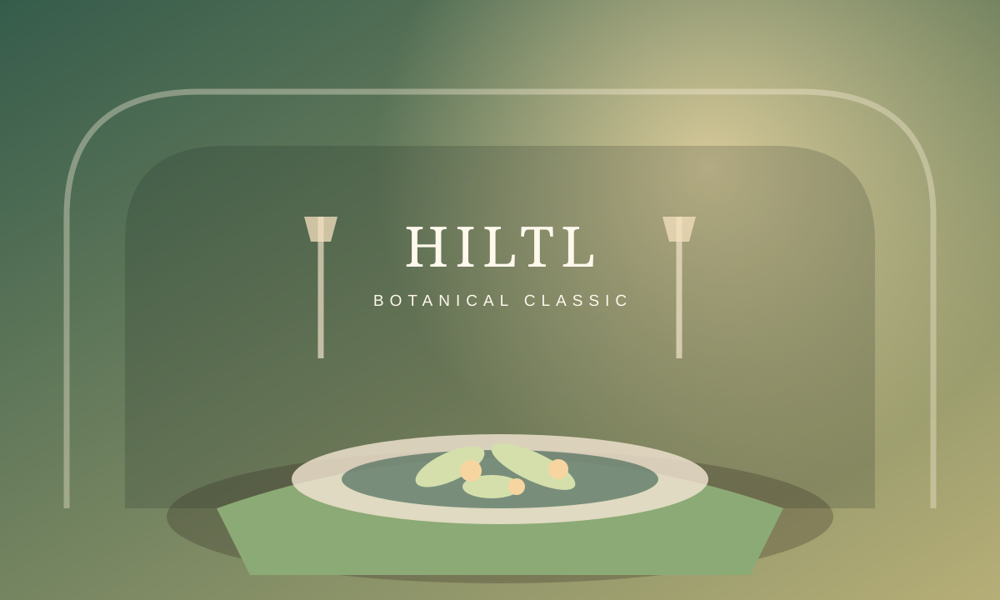

Plant-based · Sharing plates
DAR
Creative, colourful dishes with a playful Mediterranean-inspired feel. A lovely place to share a few plates.
Weststrasse 20 · Zürich
Dinner guide: CHF 62–79 per person
I picked a few places for us.
You only have one job — choose where we're going.
Tap Explore to check the restaurant first.
Creative, colourful dishes with a playful Mediterranean-inspired feel. A lovely place to share a few plates.

An elegant Zürich favourite with a huge variety of vegetarian food and a relaxed dinner atmosphere.

Inventive vegetable-focused cooking in an intimate, contemporary setting. A special-occasion option.

Stylish interiors and a modern menu, with vegetarian options to check before we book.